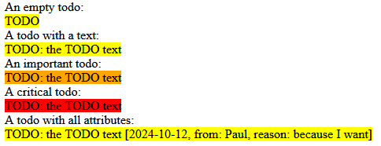
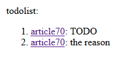

Home
Categories
Dictionary
Download
Project Details
Changes Log
What Links Here
How To
Syntax
FAQ
License
TODO
1 todo
1.1 Example
2 progress messageBox
2.1 Example
3 todo property
4 todolist
4.1 Example
5 Notes
6 See also
1.1 Example
2 progress messageBox
2.1 Example
3 todo property
4 todolist
4.1 Example
5 Notes
6 See also
The "todo" element allows to add a "TODO" in the wiki. The "todolist" element allows to add a list of all TODOs found in the wiki (which is a list of all the "todo" elements found in the wiki with their associated article.
Adding todos and using the "todolist" element allows to show a comprehensive list of all things you still need to do in your wiki, in one place.
The possible attributes re:
The messageBox element with the "progress" type allows to add a "TODO" in the wiki. Note that it will only be considered as a "TODO" if the "todo" attribute is present[1]
The "todo" property shows the number of "todo" in the wiki and is always provided by default.
For example:
Adding todos and using the "todolist" element allows to show a comprehensive list of all things you still need to do in your wiki, in one place.
todo
The "todo" element allows to add a "TODO" in the wiki.The possible attributes re:
- "todo" or "text": the text of the TODO
- "reason": the reason of the TODO
- "author": the author of the TODO
- "date": the date of the TODO
- "importance": the importance of the TODO. "normal" (the default) is for normal comments, "important" or "warning" is for important TODOs, "critical" is for critical TODOs
Example
The following example shows a simple TODO:<todo />The following examples shows TODOs with a text:
<todo todo="this is the text"/> <todo text="this is the text"/> <todo reason="this is the text"/>The following examples shows TODOs with various attributes:
<todo todo="this is the important TODO" importance="important" date="2024-10-12" author="Paul"/> <todo todo="this is another important TODO" importance="warning" reason="don't forget this one"/> <todo todo="this is the critical TODO" importance="critical"/>The following content:
An empty todo: <todo/> A todo with a text: <todo text="the TODO text"/> An important todo: <todo text="the TODO text" importance="important"/> A critical todo: <todo text="the TODO text" importance="critical"/> A todo with all attributes: <todo text="the TODO text" reason="because I want" date="2024-10-12" author="Paul"/>Will produce the following result:

progress messageBox
Main Article: messageBox element
The messageBox element with the "progress" type allows to add a "TODO" in the wiki. Note that it will only be considered as a "TODO" if the "todo" attribute is present[1]
If you use the "todo" attribute with other types of messageBox elements, it will not be taken into account
.
Example
<messageBox type="progress" todo="this will be in TODOs"> this a in-progress text <br/> the second line <messageBox>Result:
todo property
Main Article: Properties
The "todo" property shows the number of "todo" in the wiki and is always provided by default.
For example:
The wiki has ${todo} TODOs.
Result: The wiki has 0 TODOs.
todolist
The "todolist" element allows to add a list of all TODOs found in the wiki (which is a list of all the todo elements found in the wiki with their associated article. This element has no attributes.Example
For example:number of TODOs: ${todo}. number of errors: ${errors}. todolist: <todolist />Result:

Notes
- ^ If you use the "todo" attribute with other types of messageBox elements, it will not be taken into account
See also
- TODO system: This article is about the TODO system
- Review system: This article is about the review system
- Syntax: This article explains the XML tags which can be used to specify the articles syntax
- Syntax overview: This article presents an overview of the tags supported in the XML syntax
×

Categories: Syntax